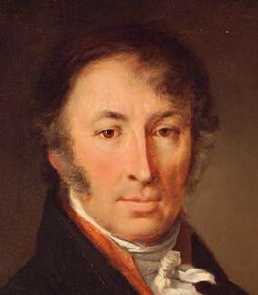

ДЕНЬ ОНСИ
«Онси» — это у японцев учитель, с которым тебя связывает долг благодарности. В день рождения обязательно нужно его поздравлять и выражать ему признательность.
Поздравляю и выражаю. Дорогой Николай Михайлович, досточтимый сенсей, с днем рождения!
Карамзин (1766–1826) проложил писательский путь, по которому я отправился, двигаясь от вехи к вехе и стараясь не сбиться.
1. Начать с романтизма и сентиментализма (Эраст и бедная Лиза). Done
2. Приманить как можно больше доверчивых читателей беллетристическими сочинениями. Done
3. А потом взять и обрушить на свою аудиторию, совершенно не интересующуюся прошлым, толстенную «Историю государства российского». Done
Пусть ругают, лишь бы заинтересовались. Потому что кто не знает прошлого своей страны, никогда не попадет в будущее.
Единственное, чему у Карамзина-сенсея я решил не учиться — это почтительности к самодержавию. Все-таки двести лет прошло. Самодержавие — анахронизм.
И еще все время вспоминаю легенду — не знаю, правдивую ли. Что будто бы 14 декабря 1825 года Николай Михайлович ходил на Сенатскую площадь понаблюдать за историей и очень распереживался, что молодые офицеры, сплошь читатели его книг, сделали из них совершенно не верноподданнические выводы. Сильно простудился, разболелся, да так и не выздоровел.
История — она такая. Смирных учит одному, смелых — другому.
У каждого из вас наверняка есть свои онси. Вспомните их сегодня добрым словом.